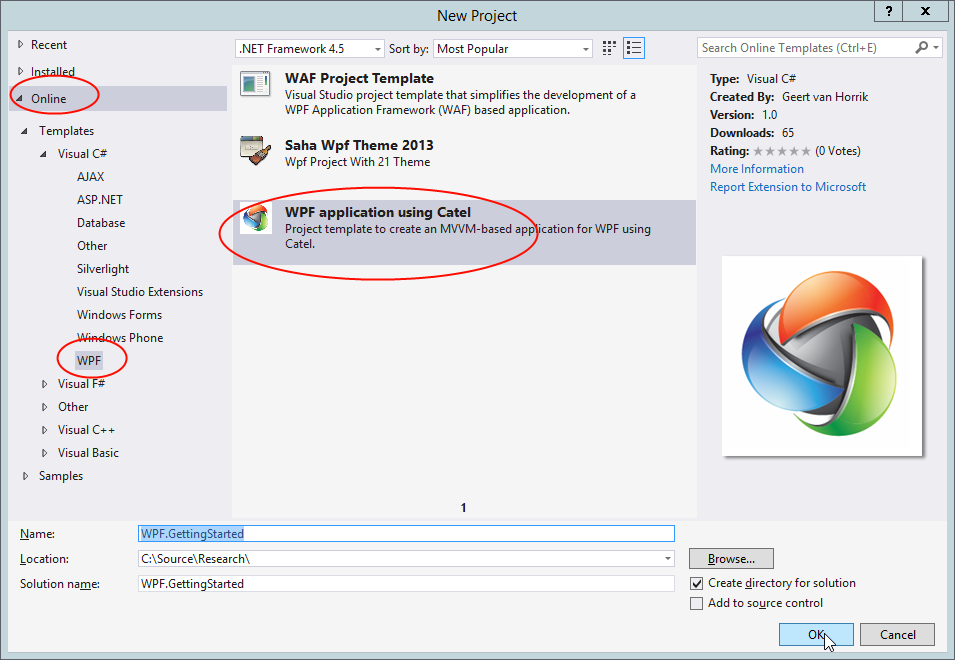
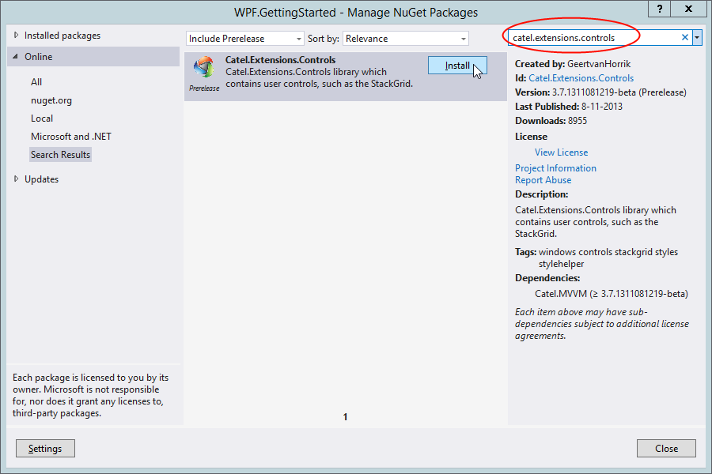
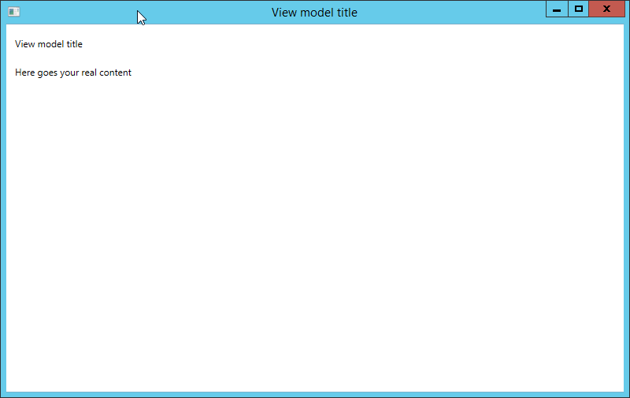
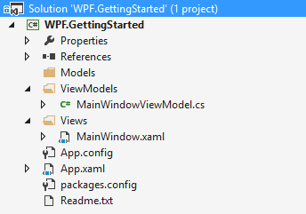

In this step we will create the project and add the relevant NuGet packages.
This guide uses the on-line templates that are available in the Visual Studio gallery. If you cannot find the templates on-line, please download them here.
Creating the project
To create the project, start Visual Studio and choose File => New Project... Then switch to the on-line template section as shown, in the screenshot below and search for Catel:

Pick a good name, in our case WPF.GettingStarted and click OK. The template will now be downloaded and the project will be created.
Adding the NuGet packages
As soon as the project is created, the Readme.txt will be opened and instruct your what to do. Right-click on the solution => *Manage NuGet packages... *Then search for Catel.MVVM and click Install.

Running the project
Now the NuGet packages are installed, the project is created and can be built. The basics are created and the application is ready:

Explanation of the project structure
The project template creates the project structure that fits best with Catel. Below is an explanation of the new project structure:

The ViewModels folder contains the MainWindowViewModel, which contains the logic for the interaction with the MainWindow view.
The Views folder contains the MainWindow, which represents the actual view.
This structure ties to how Catel implements viewmodel location. You do not however have to follow this structure and could for example decide to place both the View and ViewModel under the same namespace/folder and implement a custom IViewModelLocator.
Up next
[Creating the models]({{< relref "getting-started/wpf/creating-the-models.md" >}})